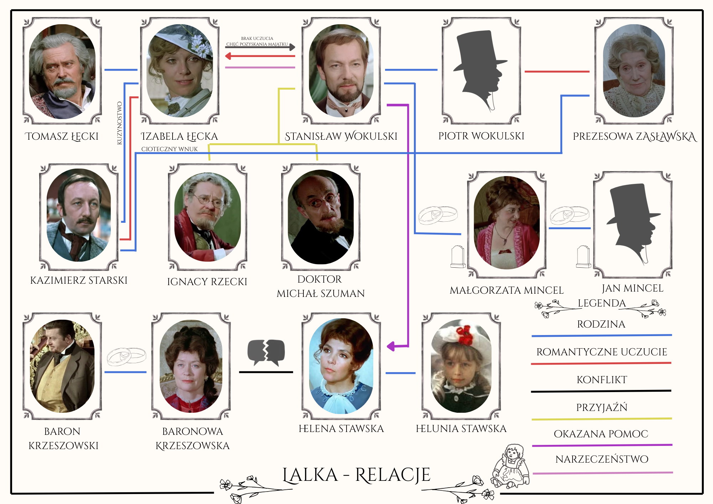
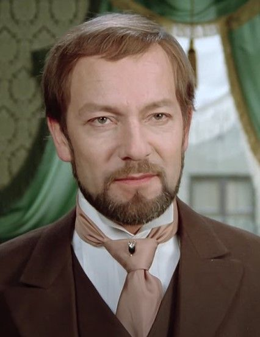
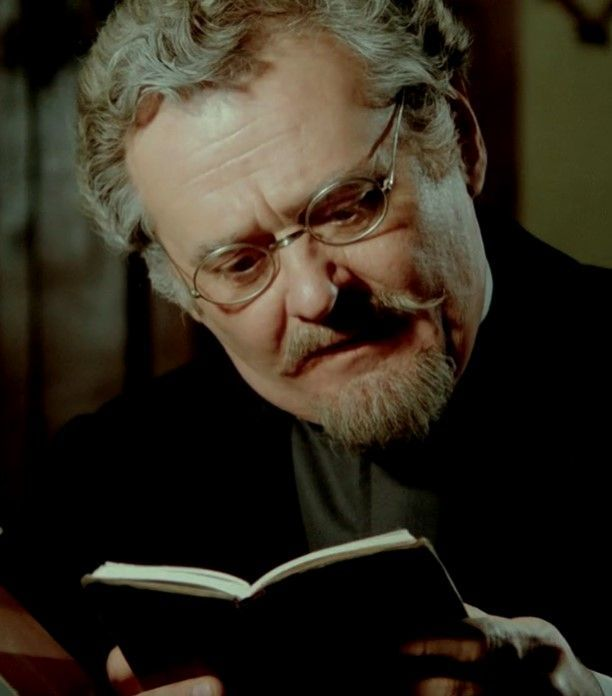
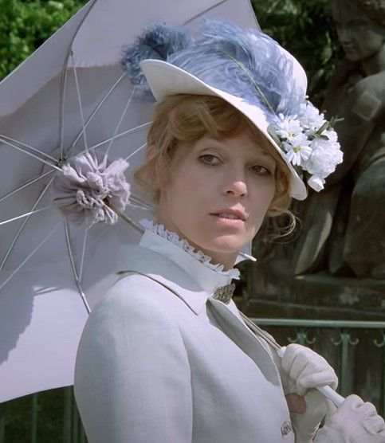
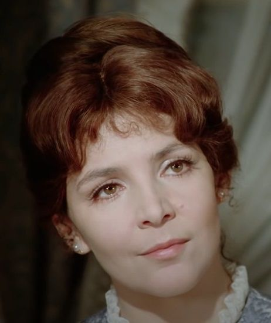
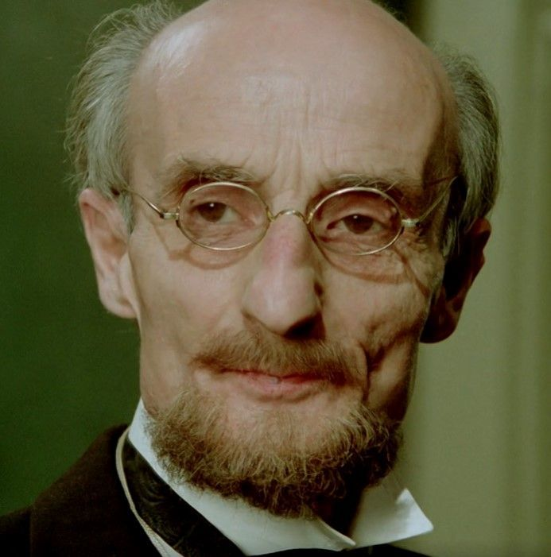
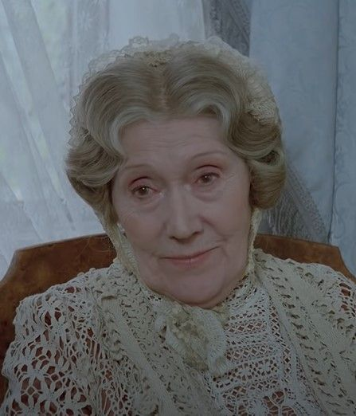
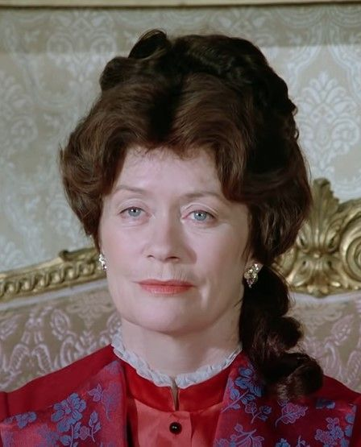

RELACJE

Stanisław Wokulski
Główny bohater powieści Lalka Bolesław Prusa
Stanisław Wokulski

Właściciel sklepu, który wraz z majątkiem odziedziczył po śmierci pierwszej żony, Małgorzaty. Brał udział w powstaniu styczniowym, przez co został zesłany na Syberię. Następnie, wzbogacił się na sprzedaży broni w Bułgarii oraz interesach w Paryżu.
Łączy w sobie cechy romantyka oraz pozytywisty. Idealizuje swoją ukochaną, jest ślepy na jej prawdziwe intencje. Gdy je odkrywa, chce zakończyć swoje życie. Jest to charakterystyczna cecha romantyzmu.
Pomimo tego, Wokulski jest bradzo pracowity. Jawnie utożsamia się z zwolennikami postępu, interesuje się wynalazkami oraz wspiera najnowsze odkrycia profesora Geista.
Ignacy Rzecki
Przyjaciel Stanisława Wokulskiego
Ignacy Rzecki

Prowadzi pamiętnik, który poznwala nam poznać głównego bohatera z prespektywy bliskiej mu osoby.
Po śmierci swojego ojca, znajduje pracę w sklepie Mincla. Nie jest tam dobrze traktowany, jednak sklep staje się jego drugim domem, którego nie chce opuścić. Dba o niego, rzetelnie wykonuje pracę i ściśle prowadzi harmonogram; pokazuje to jego oddanie. Nawet po tym jak Wokulski sprzedaje sklep i Rzecki nie jest w nim mile widziany, kontynuuje tam pracę.
Na końcu dzieła, Rzecki zostaje nazwany ostatnim romantykiem. Fraza jest związana z oddaniem jakiego się dopuścił oraz silnymi emocjami, którymi darzył Stawską, jak i swojego przyjaciela, Wokulskiego.
Izabela Łęcka
Jedna z głównych bohaterów książki
Izabela Łęcka

Młoda arystokratka, której rodzina zaczęła zmagać się z długami i utratą majątku. Jest opisywana jako piękna kobieta z blond włosami oraz niebieskimi oczami. Natomiast doktor Szuman, z swojej perspektywy dodaje, że jest to kobieta bez duszy.
Początkowo Łęcka nie jest pozytywnie nastawiona w stronę Wokulskiego. Nie chce za niego wyjść, pomimo licznych prób przekonywania. Dopiero, kiedy dowiaduje się o majątu Wokulskiego, postanawia przyjąć zaręczyny. Mimo to zdradza go z Starskim.
Po śmierci ojca, jej adoratorzy tracą nią zainteresowanie. Przez sytuację majątkową zostaje zmuszona aby wstąpić do klasztoru.
Helena Stawska
Ważna drugoplanowa postać
Helena Stawska

Zamieszkuje w kamieniecy Łęckich, gdzie samotnie wychowuje córkę i opiekuje się swoją matką. Zarabia ucząc gry na fortepianie, harfie i angielskiego.
Po zaginięciu męża, otrzymuje pomoc od Wokulskiego. Przez to, zaczynają rozchodzić się plotki o ich związku. W takcie książki, Stawska zostaje oskarżona o kradzież lalki Krzeszowskiej. Ostatecznie, prawda wychodzi na jaw i Krzeszowska ją przeprasza. Kiedy dowiaduje się o śmierci mężą, przyjmuje oświadczyny Marczawskiego.
Przejawia cechy kojarzone z pozytywizmem. Jest pracowita i mimo ciężaru jaki na nią spadł, stara się zapewnić swojej córce jak najlepsze życie.
Michał Szuman
Drugoplanowy bohater
Michał Szuman

Jest medykiem pochodzenia żydowskiego. Przyjaźni się blisko z Wokulskim i to on uświadamia go o jego uczuciach do Izabeli Łęckiej. Mimo to, mówi mu o swoich przemyśleniach, jak tragcznie owa relacja może się skończyć.
Szuman jest także filozofem i myśłicielem, idealistą, który spędził wiele lat nad swoimi badaniami i dowiedzeniem się, jak najwięcej o ludziej naturze.
Prezesowa Zasławska
Drugoplanowa, szanowana arystokratka
Prezesowa Zasławska

Artystokratka w podeszłym wieku. W latach młodości pałała uczuciami do stryja Wokulskiego, jednak przez jego ubogi stan majątkowy, niegdy nie doszło do ślubu, ani nawet zaręczyn.
W porównaniu do innych arystokratów jest bardzo dobrotliwa w stronę swoich parobków. Nie ocenia ludzi pod względem majątku, wyglądu czy pochodzenia, a swój dobytek, zamiast przepisać na krewnych, w całości oddała potrzebującym i ubogim.
Baronowa Krzeszowska
Epizodyczna trzecioplanowa postać
Baronowa Krzeszowska

Pochodzi z bogatej rodziny mieszczańskiej. Mimo różnic klasowych wyszła za arystokratę, Barona Krzeszowskiego. Niestety, ich małżeństwo nie należy do najlepszych, głównie przez nałóg hazardowy Barona i jego zamiłowanie kobietami. Państwo Krzeszowscy mieli córkę, jednak ta umarła. Przez ciągle obecne poczucie nieszczęścia, Baronowa nie stroni od konfliktów. Jednym z nich był konflikt o lalkę, podczas którego oskarżyła Stawską o jej kradzież.